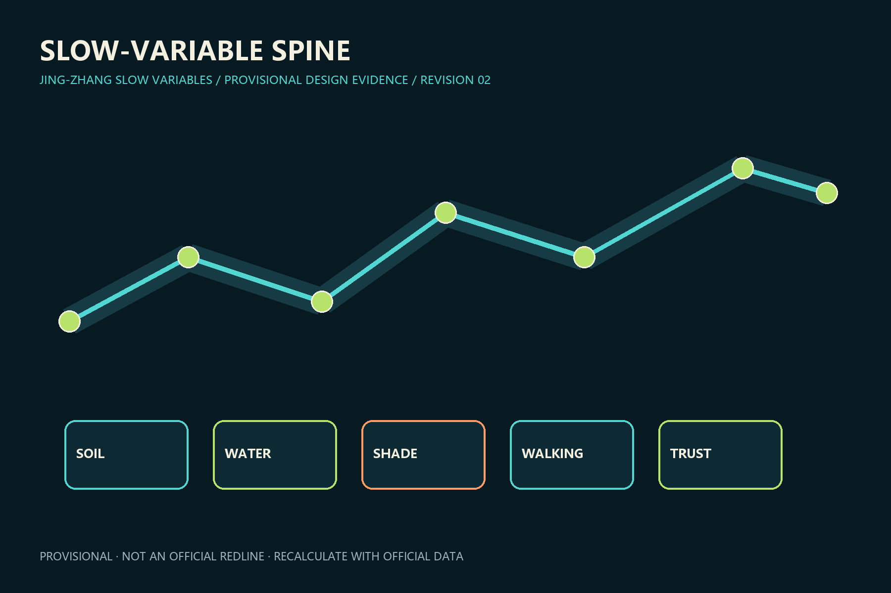

SOIL
WATER
SHADE
WALKING
TRUST
总览地图 · 三层范围 · 重点区域 · 用地分区 · 交通慢行 · 蓝绿公共空间 · 建筑 · 更新项目 · AI 场景 · 核心指标 · 任务覆盖 · 自检状态 · 来源 · 假设

THREE VALIDATION COURTS
SOURCE VALIDATION
PUBLIC TRANSLATION
INDUSTRY ADOPTION
METRICS
EVIDENCE
12 scenarios / 6 projects / 5 personas
All public AI services disclose purpose, data boundary, human takeover and exit conditions.
Sources, assumptions and self-check
See structured JSON files. Geometry and metrics are authoritative over presentation media.